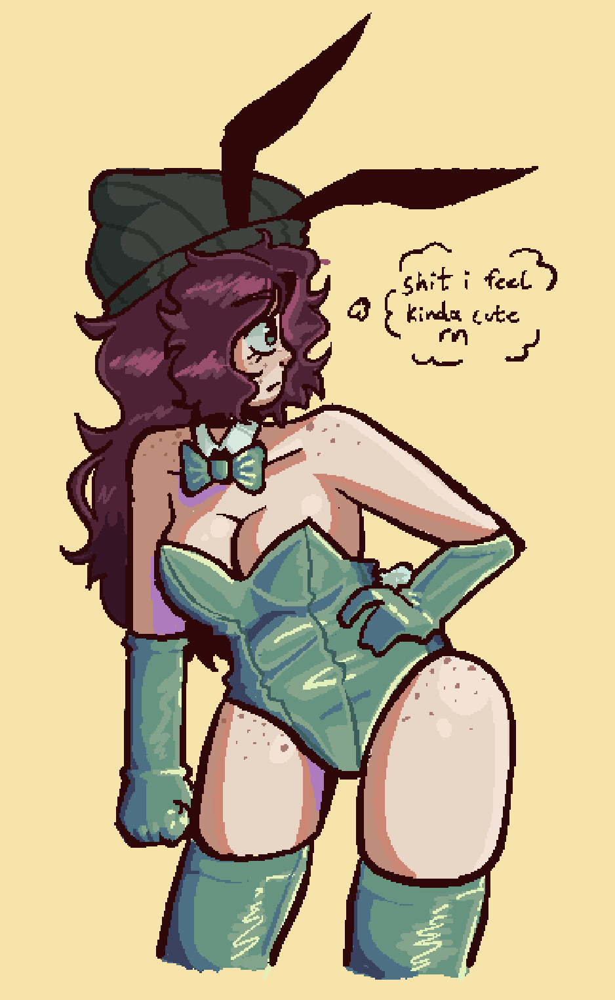
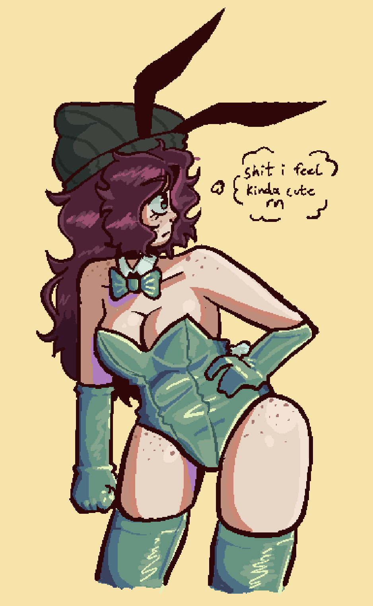
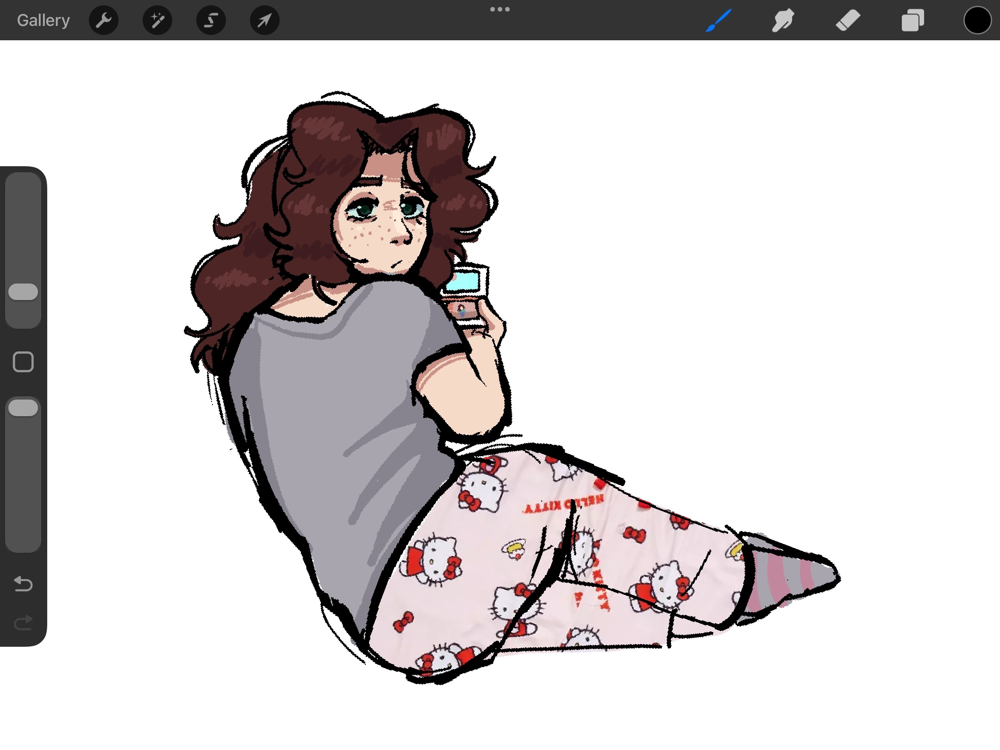
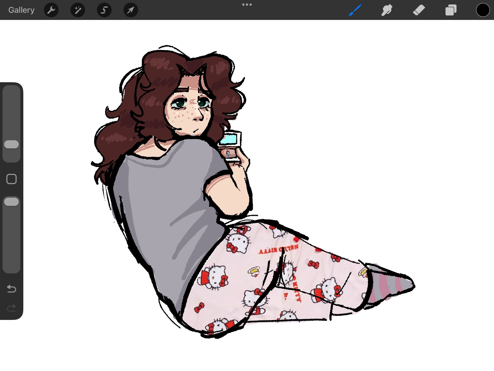
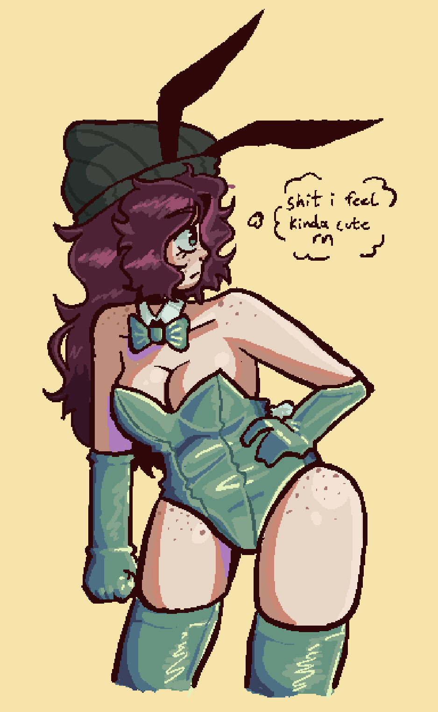
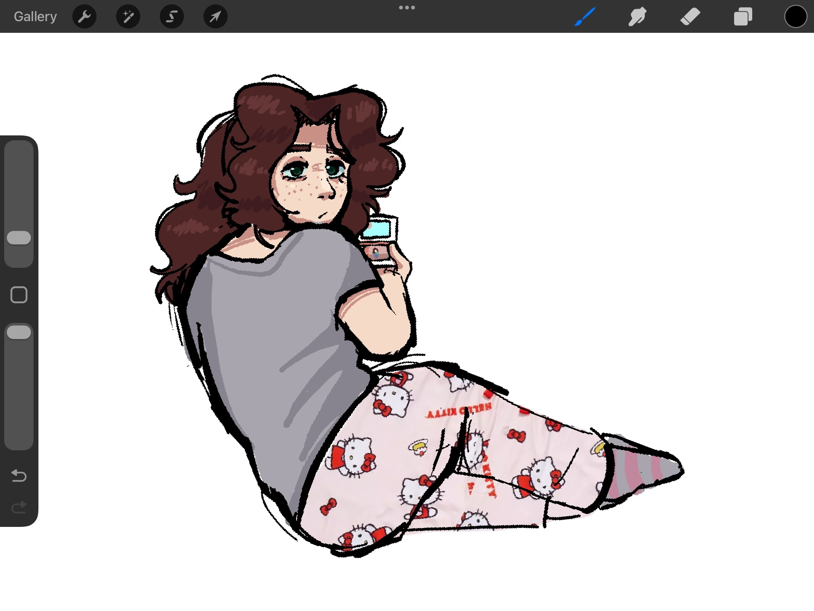

 

 About
About Sara Taylor is the protagonist of Step Right Up: Adventure Isle. I have yet to meet a single person who dislikes her.
You can also kinda see the evolution of how I draw her here. That isn't important I just thought it was neat
Go Back

